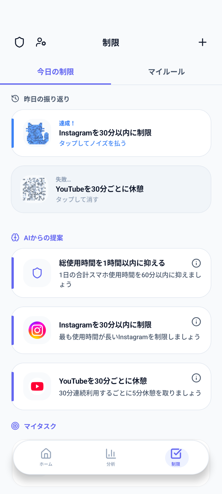
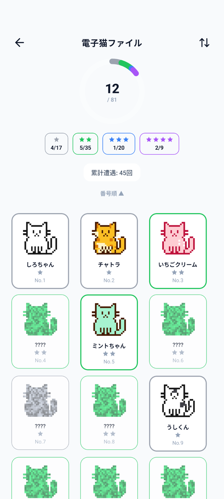
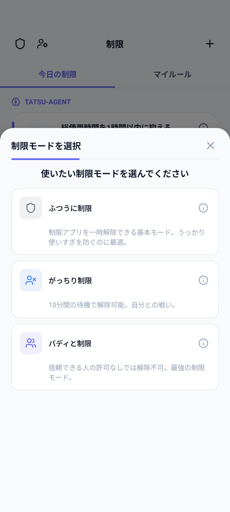
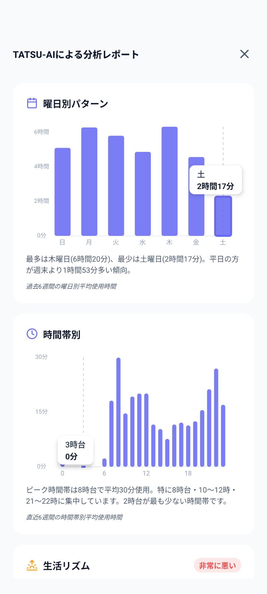

システムに、ただ身を委ねるだけ。
TATSUはもう意志の力に頼りません。
スマートに、ストレスなく毎日のスマホ時間を減らします。
Android 10+
TATSUが提案したタスクを達成すると、ドット絵の「電子猫」と出会うことができます。
何度か出会って仲良くなると、そのままアプリに居着くようになります。
珍しい電子猫を見つけて、ホーム画面に飾りましょう。
ライフスタイルや目的に応じて、最適な制限レベルを選択できます。
どうしても必要な時は「延長」も可能なスタンダードモード。まずはここから自分のペースで始めましょう。
安易に延長したり、取り消したりできない本気のデトックスモード。システムがあなたの妥協を許しません。
信頼できる「バディ」の許可がないと制限を解除できない厳しめのピアプレッシャーモード。誰かと一緒なら、必ず達成できる。
アプリのデータはすべてデバイス内にローカルで保存されます。
スマホの利用状況やタスクの達成記録などが外部のサーバーに送信されることは一切ありません。
安心して、あなたのペースでデジタルデトックスに取り組めます。
さらに進化した機能で、あなたのデジタルデトックスを完全サポートします。
デフォルトの「ふつうに制限」に加え、本気の「がっちり制限」、仲間と取り組む「バディと制限」の2つのモードが解放されます。
あなたがいちいち「許可」を押す必要はありません。システムが自動で制限を適用し、シームレスに機能します。
AIから提案されるタスクの枚数が増加。より豊富で、あなたに合わせた効果的な制限のパターンを提示します。
あなたのスマホ利用データを細かくトラッキングし、習慣の改善度合いをはっきりと可視化します。
ホームタブに飾れる電子猫の数が、無料版の1匹から最大3匹まで増枠。より賑やかなホーム画面に。
アプリ内の広告を完全に非表示にし、ノイズのない、よりデトックスに集中できる快適な環境を提供します。